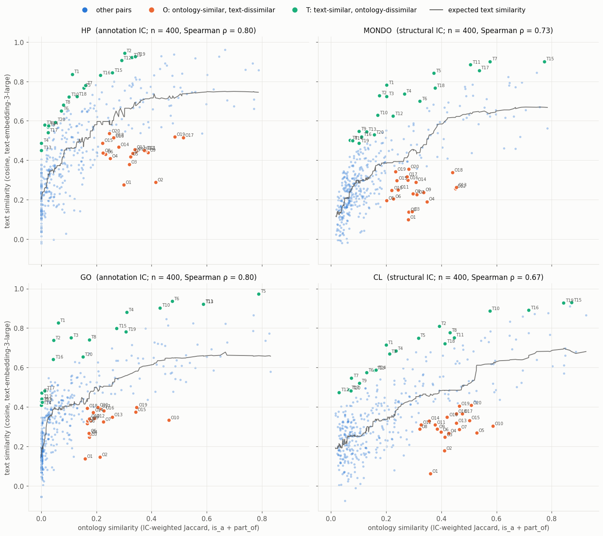

Where Ontology Similarity and Text-Embedding Similarity Disagree
For a sample of term pairs in each of several ontologies, we compare:
ontology similarity, computed from the terms’ ancestor closures:
Jaccard over
is_aancestors;Jaccard over
is_a+part_ofancestors;IC-weighted Jaccard (simGIC) over
is_a+part_of, with information content (IC) computed from the ontology structure;the same, with IC computed from annotation frequency where an annotation corpus is available: HPO disease annotations for HP, human GO annotations for GO. MONDO and CL have no comparable corpus here, so they keep structural IC. This is the main measure used for the corners below.
text similarity: cosine similarity of the terms’ LLM embeddings, as served by OLS.
IC weighting matters because sharing a generic ancestor says little. Structural IC alone can be misleading: a grouping class with few subclasses (e.g. HP Constitutional symptom) looks specific to the ontology structure even though its descendants (fever, fatigue, …) are annotated to a large fraction of diseases. Annotation-frequency IC corrects this.
Most pairs fall along a common trend. The interesting cases are the corners, where ontology and text disagree:
ontology-similar, text-dissimilar: terms that are close in the hierarchy but described in different words;
text-similar, ontology-dissimilar: terms that read alike but are classified apart.
The vectors and measures used here are available through OAK’s EmbeddingProviderInterface (closure / closure_ic models, jaccard / weighted_jaccard metrics).
[1]:
import warnings
warnings.filterwarnings("ignore", category=UserWarning, module="eutils")
warnings.filterwarnings("ignore", category=DeprecationWarning)
import matplotlib.pyplot as plt
import seaborn as sns
# reference palette (categorical slots in fixed order; sequential blue ramp)
BLUE, ORANGE, AQUA = "#2a78d6", "#eb6834", "#1baf7a"
INK, INK2, GRID, SURFACE = "#0b0b0b", "#52514e", "#e4e3df", "#fcfcfb"
plt.rcParams.update({
"figure.facecolor": SURFACE, "axes.facecolor": SURFACE, "savefig.facecolor": SURFACE,
"axes.edgecolor": GRID, "axes.labelcolor": INK2, "axes.titlecolor": INK,
"axes.grid": True, "grid.color": GRID, "grid.linewidth": 0.6,
"axes.spines.top": False, "axes.spines.right": False,
"xtick.color": INK2, "ytick.color": INK2, "text.color": INK,
"font.size": 10, "axes.titlesize": 11, "figure.dpi": 110,
})
SEQUENTIAL = sns.blend_palette(["#f0efec", "#86b6ef", "#2a78d6", "#0d366b"], as_cmap=True)
[2]:
import math
import random
from collections import Counter
import numpy as np
import pandas as pd
from oaklib import get_adapter
from oaklib.datamodels.vocabulary import IS_A, OWL_CLASS, PART_OF
MODEL = "text-embedding-3-large_pca512"
# ontology -> (id prefix, root to sample within; None for the whole ontology)
ONTOLOGIES = {
"hp": ("HP", "HP:0000118"), # Phenotypic abnormality
"mondo": ("MONDO", None),
"go": ("GO", None),
"cl": ("CL", None),
}
PREDICATES = [IS_A, PART_OF]
N_RELATED, N_RANDOM, N_SHOW = 300, 100, 20
MEASURES = {
"jaccard_isa": "Jaccard (is_a)",
"jaccard_isa_partof": "Jaccard (is_a + part_of)",
"simgic": "IC-weighted Jaccard, structural IC",
"simgic_ann": "IC-weighted Jaccard, annotation IC",
}
PRIMARY = "simgic_ann"
Sampling pairs
Purely random pairs are almost all unrelated, so they would pile up in one corner. To cover the whole range of ontology similarity, most pairs are sampled by picking a term, moving up to a random one of its is_a ancestors, then down to a random descendant of that ancestor. A smaller number of fully random pairs is added. Only terms from the ontology’s own namespace are used (no imported terms), obsolete terms are excluded, and for HP only terms under Phenotypic abnormality are used (no
clinical modifiers, inheritance modes, etc).
[3]:
def sample_pairs(adapter, prefix, root=None, seed=0):
rng = random.Random(seed)
if root:
candidates = adapter.descendants(root, predicates=[IS_A], reflexive=False)
else:
candidates = adapter.entities(filter_obsoletes=True, owl_type=OWL_CLASS)
terms = sorted(t for t in candidates if t.startswith(prefix + ":"))
term_set = set(terms)
pairs = set()
while len(pairs) < N_RELATED:
a = rng.choice(terms)
ancs = [x for x in adapter.ancestors(a, predicates=[IS_A], reflexive=False) if x in term_set]
if not ancs:
continue
x = rng.choice(ancs)
descs = [d for d in adapter.descendants(x, predicates=[IS_A], reflexive=False)
if d in term_set and d != a]
if descs:
pairs.add(tuple(sorted((a, rng.choice(descs)))))
while len(pairs) < N_RELATED + N_RANDOM:
a, b = rng.sample(terms, 2)
pairs.add(tuple(sorted((a, b))))
return sorted(pairs)
adapters, pair_sets = {}, {}
for name, (prefix, root) in ONTOLOGIES.items():
adapters[name] = (get_adapter(f"sqlite:obo:{name}"), get_adapter(f"ols:{name}"))
pair_sets[name] = sample_pairs(adapters[name][0], prefix, root)
print(name, len(pair_sets[name]), "pairs")
hp 400 pairs
mondo 400 pairs
go 400 pairs
cl 400 pairs
Annotation-frequency IC
For HP, each OMIM/Orphanet/DECIPHER disease in phenotype.hpoa is an annotated entity; for GO, each human gene product in goa_human.gaf. Annotations are propagated up the is_a + part_of closure. The IC of a term is -log2((n_t + 1) / (N + 1)), where n_t is the number of entities annotated to the term or its descendants and N is the number annotated to the root of the term’s own aspect, found by following is_a only (so each GO aspect is normalized separately, every
root has IC 0, and GO molecular functions that are part_of a biological process are still normalized within molecular function). Terms with no annotations get log2(N + 1). Negated annotations (NOT) are excluded. The annotation files are cached locally with pystow, and their release dates are printed below; the specific pairs and numbers discussed at the end come from these releases.
[4]:
import gzip
import io
import pystow
ANNOTATION_FILES = {
"hp": ("https://github.com/obophenotype/human-phenotype-ontology/releases/latest/download/phenotype.hpoa",
"phenotype.hpoa", "#", "#version:"),
# the GO server rejects requests without a user agent
"go": ("https://current.geneontology.org/annotations/goa_human.gaf.gz",
"goa_human.gaf.gz", "!", "!date-generated:"),
}
def read_annotation_file(name):
url, filename, comment_char, version_key = ANNOTATION_FILES[name]
path = pystow.ensure("oaklib", "annotations", url=url, name=filename, download_kwargs={
"backend": "requests", "headers": {"User-Agent": "oaklib"}, "progress_bar": False})
opener = gzip.open if filename.endswith(".gz") else open
with opener(path, "rt") as f:
lines = f.read().splitlines()
# header lines only occur at the top; skip exactly those
n_header = next(i for i, line in enumerate(lines) if not line.startswith(comment_char))
version = next((line.split(":", 1)[1].strip() for line in lines[:n_header]
if line.startswith(version_key)), "unknown")
return lines[n_header:], version
def hp_annotations():
lines, version = read_annotation_file("hp")
df = pd.read_csv(io.StringIO("\n".join(lines)), sep="\t", dtype=str)
df = df[(df.aspect == "P") & df.qualifier.isna()]
return df.groupby("database_id").hpo_id.apply(set), version
def go_annotations():
lines, version = read_annotation_file("go")
df = pd.read_csv(io.StringIO("\n".join(lines)), sep="\t", header=None, dtype=str, usecols=[0, 1, 3, 4])
df = df[~df[3].fillna("").str.contains("NOT")]
df["entity"] = df[0] + ":" + df[1]
return df.groupby("entity")[4].apply(set), version
ANNOTATION_SOURCES = {"hp": ("HPO disease annotations", hp_annotations),
"go": ("human GO annotations", go_annotations)}
def annotation_counts(adapter, profiles):
ancestors, counts = {}, Counter()
for terms in profiles:
closure = set()
for t in terms:
if t not in ancestors:
ancestors[t] = set(adapter.ancestors(t, predicates=PREDICATES, reflexive=True))
closure |= ancestors[t]
counts.update(closure)
return counts
def annotation_ic(adapter, counts, terms):
# IC relative to the root of the term's own aspect: the is_a ancestor with the most
# annotations. (is_a only, because GO molecular functions can be part_of processes.)
ic = {}
for t in terms:
root_count = max(counts.get(a, 0) for a in adapter.ancestors(t, predicates=[IS_A], reflexive=True))
ic[t] = math.log2((root_count + 1) / (counts.get(t, 0) + 1))
return ic
ann_counts = {}
for name, (label, load) in ANNOTATION_SOURCES.items():
profiles, version = load()
ann_counts[name] = annotation_counts(adapters[name][0], profiles)
print(f"{name}: IC from {label} (release {version}), {len(profiles)} annotated entities")
hp_ic = annotation_ic(adapters["hp"][0], ann_counts["hp"], ["HP:0025142", "HP:0000118"])
print("IC of HP 'Constitutional symptom':", round(hp_ic["HP:0025142"], 2), "bits;",
"'Phenotypic abnormality':", round(hp_ic["HP:0000118"], 2))
hp: IC from HPO disease annotations (release 2026-09-02), 12867 annotated entities
go: IC from human GO annotations (release 2026-05-21T08:10), 38923 annotated entities
IC of HP 'Constitutional symptom': 2.86 bits; 'Phenotypic abnormality': 0.0
Scoring
For each ontology, closure vectors for all sampled terms are computed in one call so that they share dimensions, then weighted by IC. In the annotation-IC vectors, the shared ancestor with the largest weight is the most informative common ancestor (MICA), listed in the tables to show where the ontology places the pair.
The structural-IC version of these vectors is available directly from the adapter:
onto.closure_embedding_predicates = [IS_A, PART_OF]
onto.embedding_similarity_matrix(terms, model="closure_ic") # weighted Jaccard = simGIC
[5]:
from oaklib.utilities.embeddings.closure_embeddings import closure_embeddings
def jaccard(x, y):
x, y = x > 0, y > 0
return (x & y).sum() / (x | y).sum()
def weighted_jaccard(x, y):
return np.minimum(x, y).sum() / np.maximum(x, y).sum()
def running_median(x, y, window=61):
# expected y for each x: median of y over the `window` nearest points in x
order = np.argsort(x.values, kind="stable")
ys, fit, h = y.values[order], np.empty(len(x)), window // 2
for i, j in enumerate(order):
fit[j] = np.median(ys[max(0, i - h) : i + h + 1])
# pairs with the same x get the same expected value, independent of row order
return pd.Series(fit).groupby(x.values).transform("median").values
frames, micas = [], {}
for name, (onto, ols) in adapters.items():
pairs = pair_sets[name]
terms = sorted({t for p in pairs for t in p})
ids1, _, C1 = closure_embeddings(onto, terms, predicates=[IS_A])
ids2, vocab, C2 = closure_embeddings(onto, terms, predicates=PREDICATES)
struct = dict(onto.information_content_scores(vocab, object_closure_predicates=PREDICATES))
W_struct = C2 * np.array([struct.get(v, 0.0) for v in vocab])
if name in ann_counts:
ann = annotation_ic(onto, ann_counts[name], vocab)
W_ann = C2 * np.array([ann[v] for v in vocab])
else:
W_ann = W_struct
ix1, ix2 = {t: i for i, t in enumerate(ids1)}, {t: i for i, t in enumerate(ids2)}
tids, T = ols.entity_embeddings(terms, model=MODEL)
T = T / np.linalg.norm(T, axis=1, keepdims=True)
tix = {t: i for i, t in enumerate(tids)}
rows = []
for a, b in pairs:
if a not in tix or b not in tix:
continue
shared = np.minimum(W_ann[ix2[a]], W_ann[ix2[b]])
micas[(a, b)] = vocab[int(shared.argmax())] if shared.max() > 0 else None
rows.append({
"ontology": name, "a": a, "b": b,
"jaccard_isa": jaccard(C1[ix1[a]], C1[ix1[b]]),
"jaccard_isa_partof": jaccard(C2[ix2[a]], C2[ix2[b]]),
"simgic": weighted_jaccard(W_struct[ix2[a]], W_struct[ix2[b]]),
"simgic_ann": weighted_jaccard(W_ann[ix2[a]], W_ann[ix2[b]]),
"text_sim": float(T[tix[a]] @ T[tix[b]]),
})
df = pd.DataFrame(rows)
df["expected_text"] = running_median(df[PRIMARY], df.text_sim)
df["text_excess"] = df.text_sim - df.expected_text
frames.append(df)
print(f"{name}: {len(df)} pairs scored ({len(pairs) - len(df)} missing a text embedding)")
scores = pd.concat(frames, ignore_index=True)
hp: 400 pairs scored (0 missing a text embedding)
mondo: 400 pairs scored (0 missing a text embedding)
go: 400 pairs scored (0 missing a text embedding)
cl: 400 pairs scored (0 missing a text embedding)
How well does each ontology measure agree with text?
Spearman correlation between each ontology measure and text similarity. For MONDO and CL the two IC-weighted columns are identical, because only structural IC is available.
[6]:
from scipy.stats import spearmanr
agreement = pd.DataFrame({
label: {name: spearmanr(d[m], d.text_sim).statistic for name, d in scores.groupby("ontology", sort=False)}
for m, label in MEASURES.items()
})
agreement.index = agreement.index.str.upper()
agreement.round(3)
[6]:
| Jaccard (is_a) | Jaccard (is_a + part_of) | IC-weighted Jaccard, structural IC | IC-weighted Jaccard, annotation IC | |
|---|---|---|---|---|
| HP | 0.748 | 0.748 | 0.789 | 0.801 |
| MONDO | 0.628 | 0.628 | 0.732 | 0.732 |
| GO | 0.706 | 0.725 | 0.760 | 0.795 |
| CL | 0.662 | 0.598 | 0.672 | 0.672 |
[7]:
GRID = ["jaccard_isa", "simgic", "simgic_ann"]
fig, axes = plt.subplots(len(ONTOLOGIES), len(GRID), figsize=(14, 17), sharey=True)
for row, (name, df) in zip(axes, scores.groupby("ontology", sort=False)):
for ax, m in zip(row, GRID):
ax.scatter(df[m], df.text_sim, s=10, color=BLUE, alpha=0.4, linewidths=0)
rho = spearmanr(df[m], df.text_sim).statistic
ax.set_title(f"{name.upper()}: {MEASURES[m]}\nSpearman ρ = {rho:.2f}", fontsize=10)
ax.set_xlim(-0.03, 1.03)
for ax in axes[:, 0]:
ax.set_ylabel("text similarity (cosine)")
for ax in axes[-1]:
ax.set_xlabel("ontology similarity")
fig.tight_layout()

Selecting the corners
Comparing percentile ranks of the two measures does not work well here: most pairs have ontology similarity near zero, so a weak ontology similarity can still rank high and a pair with little in common ends up in the “ontology-similar” corner. Instead:
ontology-similar, text-dissimilar: among pairs in the top quarter of ontology similarity, the 20 with the lowest text similarity;
text-similar, ontology-dissimilar: the 20 pairs whose text similarity most exceeds what is typical for their level of ontology similarity. “Expected” text similarity is the running median of text similarity over the 61 pairs nearest in ontology similarity (the grey line).
[8]:
ONTO_ONLY, TEXT_ONLY = ORANGE, AQUA
corners = {}
fig, axes = plt.subplots(2, 2, figsize=(13, 11.5), sharex=True, sharey=True)
for ax, (name, df) in zip(axes.flat, scores.groupby("ontology", sort=False)):
high = df[df[PRIMARY].rank(pct=True) >= 0.75]
onto_only = high.nsmallest(N_SHOW, "text_sim")
text_only = df.nlargest(N_SHOW, "text_excess")
corners[name] = (onto_only, text_only)
rest = df.drop(onto_only.index.union(text_only.index))
ax.scatter(rest[PRIMARY], rest.text_sim, s=12, color=BLUE, alpha=0.35, linewidths=0)
line = df.sort_values(PRIMARY)
ax.plot(line[PRIMARY], line.expected_text, color=INK2, linewidth=1.2, alpha=0.8)
for sub, color, tag in ((onto_only, ONTO_ONLY, "O"), (text_only, TEXT_ONLY, "T")):
ax.scatter(sub[PRIMARY], sub.text_sim, s=40, color=color, edgecolors=SURFACE, linewidths=1.2, zorder=3)
for k, (_, r) in enumerate(sub.iterrows(), 1):
ax.annotate(f"{tag}{k}", (r[PRIMARY], r.text_sim), xytext=(3, 2),
textcoords="offset points", fontsize=6.5, color=INK2)
rho = spearmanr(df[PRIMARY], df.text_sim).statistic
ic = "annotation IC" if name in ANNOTATION_SOURCES else "structural IC"
ax.set_title(f"{name.upper()} ({ic}; n = {len(df)}, Spearman ρ = {rho:.2f})")
for ax in axes[-1]:
ax.set_xlabel("ontology similarity (IC-weighted Jaccard, is_a + part_of)")
for ax in axes[:, 0]:
ax.set_ylabel(f"text similarity (cosine, {MODEL.replace('_pca512', '')})")
handles = [plt.Line2D([], [], marker="o", linestyle="", color=c, markersize=7) for c in (BLUE, ONTO_ONLY, TEXT_ONLY)]
handles.append(plt.Line2D([], [], color=INK2, linewidth=1.2))
fig.legend(handles, ["other pairs", "O: ontology-similar, text-dissimilar",
"T: text-similar, ontology-dissimilar", "expected text similarity"],
loc="upper center", ncol=4, frameon=False, bbox_to_anchor=(0.5, 1.0))
fig.tight_layout(rect=(0, 0, 1, 0.965))

The corner pairs
“IC-Jaccard” is the main measure (annotation IC for HP and GO, structural IC for MONDO and CL); structural-IC and plain Jaccard scores are shown for comparison. “MICA” is the most informative common ancestor.
[9]:
from IPython.display import Markdown, display
pd.set_option("display.max_colwidth", 55)
pd.set_option("display.max_rows", 50)
def corner_table(onto, sub, tag):
ids = set(sub.a) | set(sub.b) | {micas[(r.a, r.b)] for r in sub.itertuples()} - {None}
labels = dict(onto.labels(ids))
out = []
for k, r in enumerate(sub.itertuples(), 1):
mica = micas[(r.a, r.b)]
row = {
"#": f"{tag}{k}",
"term 1": f"{labels.get(r.a) or ''} ({r.a})",
"term 2": f"{labels.get(r.b) or ''} ({r.b})",
"text": round(r.text_sim, 2),
}
if tag == "T":
row["expected text"] = round(r.expected_text, 2)
row.update({
"IC-Jaccard": round(r.simgic_ann, 2),
"IC-Jaccard (structural)": round(r.simgic, 2),
"Jaccard is_a": round(r.jaccard_isa, 2),
"MICA": labels.get(mica, mica) if mica else "(none)",
})
out.append(row)
return pd.DataFrame(out).set_index("#")
for name, (onto_only, text_only) in corners.items():
onto = adapters[name][0]
display(Markdown(f"### {name.upper()}: ontology-similar, text-dissimilar"))
display(corner_table(onto, onto_only, "O"))
display(Markdown(f"### {name.upper()}: text-similar, ontology-dissimilar"))
display(corner_table(onto, text_only, "T"))
HP: ontology-similar, text-dissimilar
| term 1 | term 2 | text | IC-Jaccard | IC-Jaccard (structural) | Jaccard is_a | MICA | |
|---|---|---|---|---|---|---|---|
| # | |||||||
| O1 | Abnormality of abdominal situs (HP:0011620) | Isomerism (HP:0031853) | 0.28 | 0.30 | 0.36 | 0.50 | Heterotaxy |
| O2 | Light-chain paraproteinemia (HP:0031048) | Increased anti-dust mite IgE antibody level (HP:041... | 0.29 | 0.41 | 0.54 | 0.72 | Abnormal circulating immunoglobulin concentration |
| O3 | Partial development of the penile shaft (HP:0008708) | Varicocele (HP:0012871) | 0.38 | 0.32 | 0.45 | 0.67 | Abnormal male external genitalia morphology |
| O4 | Abnormality of superior crus of antihelix (HP:0011245) | Long ear (HP:0400004) | 0.41 | 0.25 | 0.44 | 0.67 | Abnormal pinna morphology |
| O5 | Partial functional complement factor D deficiency (... | Elevated circulating complement component concentra... | 0.42 | 0.32 | 0.41 | 0.67 | Abnormality of complement system |
| O6 | Neoplasm by histology (HP:0011792) | Craniopharyngioma (HP:0030062) | 0.43 | 0.23 | 0.30 | 0.57 | Neoplasm by histology |
| O7 | Jaw claudication (HP:0030164) | Absent superficial temporal artery pulse (HP:6000786) | 0.44 | 0.33 | 0.46 | 0.70 | Abnormal arterial physiology |
| O8 | Thin upper lip vermilion (HP:0000219) | Abnormal tongue morphology (HP:0030809) | 0.44 | 0.22 | 0.31 | 0.53 | Abnormal oral cavity morphology |
| O9 | Geophagia (HP:0025062) | Bulimia (HP:0100739) | 0.44 | 0.39 | 0.54 | 0.75 | Abnormal eating behavior |
| O10 | Reduced eye contact (HP:0000817) | Use of another person's body to communicate (HP:400... | 0.45 | 0.34 | 0.49 | 0.73 | Abnormal nonverbal communicative behavior |
| O11 | Anti-NMDA receptor antibody positivity (HP:0032264) | Anti-complement component antibody positivity (HP:6... | 0.45 | 0.38 | 0.46 | 0.75 | Autoimmune antibody positivity |
| O12 | Nephropathy (HP:0000112) | Steroid-dependent nephrotic syndrome (HP:0025650) | 0.45 | 0.37 | 0.47 | 0.73 | Abnormal renal physiology |
| O13 | Transient decreased circulating IgG2 concentration ... | Increased anti-plant product IgE antibody level (HP... | 0.45 | 0.34 | 0.43 | 0.62 | Abnormal circulating immunoglobulin concentration |
| O14 | Mesangial matrix expansion (HP:0033493) | Membranous lupus nephritis (HP:0033730) | 0.47 | 0.28 | 0.32 | 0.46 | Abnormal renal glomerulus morphology |
| O15 | Anti-GQ1b IgM antibody positivity (HP:0034123) | Anti-Kv1.4 antibody (HP:5000048) | 0.49 | 0.22 | 0.30 | 0.60 | Autoimmune antibody positivity |
| O16 | Orthostatic hypotension due to autonomic dysfunctio... | Reduced sympathoneural responses to the cold presso... | 0.51 | 0.26 | 0.32 | 0.46 | Abnormal autonomic nervous system physiology |
| O17 | Midline hand movements (HP:5200009) | Stereotypic movements of face and head (HP:5200017) | 0.52 | 0.52 | 0.61 | 0.77 | Motor stereotypy |
| O18 | Absent bronchoalveolar dimeric surfactant-protein B... | Elevated bronchoalveolar lavage fluid eosinophil pr... | 0.52 | 0.26 | 0.36 | 0.60 | Abnormal bronchoalveolar lavage fluid morphology |
| O19 | Torsade de pointes (HP:0001664) | Ventricular escape rhythm (HP:0005155) | 0.52 | 0.48 | 0.57 | 0.78 | Ventricular arrhythmia |
| O20 | Dysphonia (HP:0001618) | Abnormal cry (HP:0025429) | 0.54 | 0.25 | 0.31 | 0.60 | Abnormality of the voice |
HP: text-similar, ontology-dissimilar
| term 1 | term 2 | text | expected text | IC-Jaccard | IC-Jaccard (structural) | Jaccard is_a | MICA | |
|---|---|---|---|---|---|---|---|---|
| # | ||||||||
| T1 | Periorbital fullness (HP:0000629) | Lower eyelid edema (HP:0012568) | 0.84 | 0.46 | 0.11 | 0.16 | 0.30 | Abnormality of the periorbital region |
| T2 | Complete duplication of distal phalanx of the thumb... | Complete duplication of the distal phalanx of the 2... | 0.94 | 0.62 | 0.30 | 0.37 | 0.54 | Complete duplication of the distal phalanges of the... |
| T3 | Psychotic episodes (HP:0000725) | Focal aware emotional seizure with laughing (HP:003... | 0.58 | 0.26 | 0.01 | 0.06 | 0.22 | Abnormal nervous system physiology |
| T4 | Osteoma cutis (HP:0025027) | Patchy sclerosis of the proximal phalanx of the 3rd... | 0.49 | 0.20 | 0.00 | 0.01 | 0.05 | (none) |
| T5 | Patchy sclerosis of the distal phalanx of the 3rd f... | Partial duplication of the distal phalanx of the 3r... | 0.77 | 0.49 | 0.15 | 0.20 | 0.35 | Abnormality of the distal phalanx of the 3rd finger |
| T6 | Partial duplication of the middle phalanx of the 2n... | Triangular epiphysis of the distal phalanx of the 3... | 0.65 | 0.38 | 0.07 | 0.17 | 0.36 | Abnormal toe morphology |
| T7 | Absent middle phalanx of 4th finger (HP:0009294) | Patchy sclerosis of the middle phalanx of the 4th f... | 0.78 | 0.52 | 0.16 | 0.19 | 0.33 | Abnormality of the middle phalanx of the 4th finger |
| T8 | Small epiphysis of the proximal phalanx of the 2nd ... | Osteolytic defects of the distal phalanx of the 3rd... | 0.68 | 0.42 | 0.08 | 0.17 | 0.35 | Abnormal toe morphology |
| T9 | Synostosis involving the 5th metacarpal (HP:0009708) | Proximal radioulnar joint dislocation (HP:6000890) | 0.57 | 0.31 | 0.02 | 0.04 | 0.13 | Abnormality of the upper limb |
| T10 | Enlarged epiphysis of the middle phalanx of the 3rd... | Broad 1st metacarpal (HP:0010027) | 0.72 | 0.46 | 0.10 | 0.18 | 0.36 | Abnormal finger phalanx morphology |
| T11 | Sclerosis of the distal phalanx of the 2nd finger (... | Sclerosis of the proximal phalanx of the 5th finger... | 0.92 | 0.66 | 0.33 | 0.44 | 0.62 | Sclerosis of finger phalanx |
| T12 | Late-onset proximal muscle weakness (HP:0003694) | Progressive proximal muscle weakness (HP:0009073) | 0.91 | 0.65 | 0.29 | 0.46 | 0.70 | Proximal muscle weakness |
| T13 | Abnormality of liposaccharide metabolism (HP:0010968) | Abnormality of abdominal situs (HP:0011620) | 0.45 | 0.20 | 0.00 | 0.02 | 0.20 | (none) |
| T14 | Bone-in-a-bone appearance of forearm (HP:0003955) | Bullet-shaped middle phalanx of the 3rd finger (HP:... | 0.58 | 0.33 | 0.03 | 0.06 | 0.17 | Abnormality of the upper limb |
| T15 | Triangular epiphysis of the distal phalanx of the 2... | Bracket epiphysis of the distal phalanx of the 5th ... | 0.84 | 0.60 | 0.26 | 0.35 | 0.58 | Abnormal toe epiphysis morphology |
| T16 | Short distal phalanx of the 4th finger (HP:0009290) | Aplasia of the distal phalanx of the 2nd finger (HP... | 0.83 | 0.60 | 0.21 | 0.31 | 0.49 | Aplasia/Hypoplasia of the distal phalanges of the hand |
| T17 | Abnormality of the joint spaces of the elbow (HP:00... | Irregular epiphysis of the proximal phalanx of the ... | 0.54 | 0.31 | 0.02 | 0.07 | 0.18 | Abnormality of the upper limb |
| T18 | Elevated circulating dihydroxyphenylacetic acid con... | Elevated circulating 2-aminoadipic acid concentrati... | 0.72 | 0.49 | 0.13 | 0.21 | 0.45 | Abnormal circulating organic compound concentration |
| T19 | Broad distal phalanx of the toes (HP:0010186) | Broad proximal phalanx of the 5th toe (HP:0100430) | 0.93 | 0.69 | 0.34 | 0.48 | 0.68 | Broad phalanx of the toes |
| T20 | Hyperplasia of midface (HP:0012371) | Abnormality of levator labii superioris (HP:3000071) | 0.59 | 0.36 | 0.05 | 0.14 | 0.33 | Abnormality of the face |
MONDO: ontology-similar, text-dissimilar
| term 1 | term 2 | text | IC-Jaccard | IC-Jaccard (structural) | Jaccard is_a | MICA | |
|---|---|---|---|---|---|---|---|
| # | |||||||
| O1 | dilated cardiomyopathy 2A (MONDO:0012746) | 46,XY sex reversal 6 (MONDO:0013410) | 0.10 | 0.28 | 0.28 | 0.50 | familial cardiomyopathy |
| O2 | autism, susceptibility to, 20 (MONDO:0030004) | gallbladder disease 4 (MONDO:1010151) | 0.14 | 0.28 | 0.28 | 0.70 | inherited disease susceptibility |
| O3 | monosodium glutamate sensitivity (MONDO:0009280) | Lamb-Shaffer syndrome (MONDO:0014778) | 0.14 | 0.29 | 0.29 | 0.83 | hereditary disease |
| O4 | trigonocephaly (MONDO:0000156) | osteogenesis imperfecta, type 20 (MONDO:0032846) | 0.19 | 0.35 | 0.35 | 0.61 | bone development disease |
| O5 | Huntington disease, non-human animal (MONDO:1010231) | acute equine grass sickness (MONDO:1016381) | 0.20 | 0.20 | 0.20 | 0.50 | central nervous system disorder, non-human animal |
| O6 | portosystemic shunt, non-human animal (MONDO:1011409) | XX difference of sexual development, dog (MONDO:101... | 0.20 | 0.23 | 0.23 | 0.56 | disorder of development or morphogenesis, non-human... |
| O7 | fumaric aciduria (MONDO:0011730) | Leber-like hereditary optic neuropathy, autosomal r... | 0.23 | 0.31 | 0.31 | 0.54 | inborn mitochondrial metabolism disorder |
| O8 | spinocerebellar degeneration with slow eye movement... | Alzheimer disease 5 (MONDO:0011194) | 0.23 | 0.30 | 0.30 | 0.53 | hereditary dementia |
| O9 | infectious ectromelia (MONDO:0005809) | ascarid impaction, non-human animal (MONDO:1014847) | 0.24 | 0.34 | 0.34 | 0.71 | infectious disease, non-human animal |
| O10 | spondyloepimetaphyseal dysplasia with joint laxity,... | congenital disorder of glycosylation, type iit (MON... | 0.25 | 0.22 | 0.22 | 0.50 | congenital disorder of glycosylation |
| O11 | asphyxiating thoracic dystrophy 4 (MONDO:0013441) | pseudohypoaldosteronism type 1 (MONDO:0019161) | 0.25 | 0.24 | 0.24 | 0.46 | inherited renal tubular disease |
| O12 | moyamoya angiopathy-short stature-facial dysmorphis... | aneurysm, intracranial berry, 9 (MONDO:0012949) | 0.26 | 0.45 | 0.45 | 0.66 | cerebral arterial disease |
| O13 | onychodystrophy, non-human animal (MONDO:1017354) | Appaloosa horse parentage syndrome (MONDO:1017535) | 0.26 | 0.45 | 0.45 | 0.83 | skin disorder, non-human animal |
| O14 | primary lateral sclerosis, adult, 1 (MONDO:0012708) | KY-related neuromyopathy (MONDO:1010194) | 0.29 | 0.31 | 0.31 | 0.65 | hereditary neuromuscular disease |
| O15 | subcortical band heterotopia (MONDO:0020491) | pfeiffer rockelein syndrome (MONDO:0043172) | 0.30 | 0.24 | 0.24 | 0.69 | syndromic disease |
| O16 | osteopetrosis, non-human animal (MONDO:1010300) | cataract and non-ketotic hyperglycinemia, grivet (M... | 0.30 | 0.28 | 0.28 | 0.61 | hereditary disease, non-human animal |
| O17 | Bardet-Biedl syndrome 3 (MONDO:0010832) | retinitis pigmentosa 55 (MONDO:0013312) | 0.32 | 0.28 | 0.28 | 0.48 | ARL6-related ciliopathy |
| O18 | abacavir toxicity (MONDO:0027653) | carbon monoxide poisoning (MONDO:0800373) | 0.34 | 0.44 | 0.44 | 0.83 | poisoning |
| O19 | trochlear nerve disorder (MONDO:0007002) | foix chavany Marie syndrome (MONDO:0023171) | 0.34 | 0.23 | 0.23 | 0.62 | cranial nerve neuropathy |
| O20 | autism, susceptibility to, X-linked 4 (MONDO:0010440) | polycystic kidney disease 9, susceptibility to (MON... | 0.35 | 0.28 | 0.28 | 0.70 | inherited disease susceptibility |
MONDO: text-similar, ontology-dissimilar
| term 1 | term 2 | text | expected text | IC-Jaccard | IC-Jaccard (structural) | Jaccard is_a | MICA | |
|---|---|---|---|---|---|---|---|---|
| # | ||||||||
| T1 | rete testis adenoma (MONDO:0003893) | epididymal adenomatoid tumor (MONDO:0004227) | 0.78 | 0.39 | 0.20 | 0.20 | 0.47 | male reproductive system neoplasm |
| T2 | non-keratinizing sinonasal squamous cell carcinoma ... | maxillary sinus adenocarcinoma (MONDO:0004328) | 0.73 | 0.38 | 0.18 | 0.18 | 0.30 | nasal cavity and paranasal sinus carcinoma |
| T3 | familial sleep-related hypermotor epilepsy (MONDO:0... | neuronal ceroid lipofuscinosis 8 northern epilepsy ... | 0.72 | 0.39 | 0.20 | 0.20 | 0.43 | variable age epilepsy syndrome |
| T4 | peripheral focal chorioretinitis (MONDO:0001393) | retinal vasculitis (MONDO:0006950) | 0.74 | 0.41 | 0.27 | 0.27 | 0.52 | uveitis |
| T5 | mycosis fungoides, dog (MONDO:1010943) | mycosis fungoides, domestic cat (MONDO:1010944) | 0.84 | 0.55 | 0.37 | 0.37 | 0.59 | mycosis fungoides, non-human animal |
| T6 | brain stem ependymoma (MONDO:0003477) | central neurocytoma (MONDO:0019134) | 0.70 | 0.44 | 0.32 | 0.32 | 0.57 | brain cancer |
| T7 | acute tracheobronchitis, non-human animal (MONDO:10... | chronic tracheobronchitis, non-human animal (MONDO:... | 0.90 | 0.64 | 0.58 | 0.58 | 0.86 | bronchitis, non-human animal |
| T8 | endobronchial lipoma (MONDO:0000961) | lipid-rich breast carcinoma (MONDO:0021090) | 0.50 | 0.24 | 0.07 | 0.07 | 0.27 | neoplasm |
| T9 | malignant thyroid stimulating hormone producing neo... | functional pancreatic neuroendocrine tumor (MONDO:0... | 0.55 | 0.30 | 0.10 | 0.10 | 0.25 | functioning endocrine neoplasm |
| T10 | childhood immature teratoma of ovary (MONDO:0004082) | childhood central nervous system germinoma (MONDO:0... | 0.63 | 0.38 | 0.17 | 0.17 | 0.31 | malignant childhood germ cell neoplasm |
| T11 | congenital renal dysplasia, non-human animal (MONDO... | congenital renal aplasia, non-human animal (MONDO:1... | 0.88 | 0.64 | 0.51 | 0.51 | 0.83 | congenital renal anomaly, non-human animal |
| T12 | oculocutaneous albinism, SLC45A2-related, dog (MOND... | craniomandibular osteopathy, SLC37A2-related, dog (... | 0.62 | 0.39 | 0.22 | 0.22 | 0.58 | hereditary disease, non-human animal |
| T13 | testicular Brenner tumor (MONDO:0003118) | Bartholin gland adenoma (MONDO:0003419) | 0.55 | 0.31 | 0.13 | 0.13 | 0.36 | reproductive system neoplasm |
| T14 | parapharyngeal meningioma (MONDO:0004502) | benign neoplasm of epiglottis (MONDO:0021446) | 0.50 | 0.27 | 0.08 | 0.08 | 0.32 | neoplasm |
| T15 | aneurysm, intracranial berry, 8 (MONDO:0012811) | aneurysm, intracranial berry, 9 (MONDO:0012949) | 0.90 | 0.67 | 0.77 | 0.77 | 0.92 | intracranial berry aneurysm |
| T16 | subacute progressive myopathy, non-human animal (MO... | sepsis, non-human animal (MONDO:1014821) | 0.52 | 0.30 | 0.11 | 0.11 | 0.47 | non-human animal disease |
| T17 | dilated cardiomyopathy 1R (MONDO:0013261) | dilated cardiomyopathy 1GG (MONDO:0013339) | 0.86 | 0.64 | 0.54 | 0.54 | 0.71 | familial isolated dilated cardiomyopathy |
| T18 | breast rhabdomyosarcoma (MONDO:0002859) | childhood pleomorphic rhabdomyosarcoma (MONDO:0004233) | 0.77 | 0.56 | 0.38 | 0.38 | 0.60 | rhabdomyosarcoma |
| T19 | spinal cord lipoma (MONDO:0001790) | diffuse intrinsic pontine glioma (MONDO:0006033) | 0.49 | 0.30 | 0.10 | 0.10 | 0.29 | central nervous system neoplasm |
| T20 | primary ciliary dyskinesia CCDC39-related, dog (MON... | mucolipidosis, GNPTAB-related, domestic cat (MONDO:... | 0.53 | 0.35 | 0.16 | 0.16 | 0.42 | hereditary disease, non-human animal |
GO: ontology-similar, text-dissimilar
| term 1 | term 2 | text | IC-Jaccard | IC-Jaccard (structural) | Jaccard is_a | MICA | |
|---|---|---|---|---|---|---|---|
| # | |||||||
| O1 | catecholamine uptake (GO:0090493) | migracytosis (GO:0140495) | 0.14 | 0.16 | 0.25 | 0.50 | transport |
| O2 | ground meristem histogenesis (GO:0010066) | style development (GO:0048479) | 0.15 | 0.21 | 0.27 | 0.62 | plant gross anatomical part developmental process |
| O3 | positive regulation of interferon-beta production (... | RNA destabilization (GO:0050779) | 0.25 | 0.17 | 0.25 | 0.42 | positive regulation of macromolecule metabolic process |
| O4 | selenocysteine incorporation (GO:0001514) | regulation of translation at postsynapse, modulatin... | 0.26 | 0.18 | 0.26 | 0.47 | regulation of translation |
| O5 | telomerase holoenzyme complex (GO:0005697) | repressor ecdysone receptor complex (GO:0008231) | 0.27 | 0.17 | 0.49 | 0.50 | nuclear protein-containing complex |
| O6 | dichotomous subdivision of terminal units involved ... | pulmonary artery endothelial tube morphogenesis (GO... | 0.32 | 0.17 | 0.19 | 0.50 | epithelial tube morphogenesis |
| O7 | potassium:proton exchanging ATPase complex (GO:0005... | HFE-transferrin receptor complex (GO:1990712) | 0.33 | 0.23 | 0.42 | 0.50 | plasma membrane protein complex |
| O8 | 3'(2'),5'-bisphosphate nucleotidase activity (GO:00... | wax-ester hydrolase activity (GO:0050398) | 0.33 | 0.17 | 0.24 | 0.50 | hydrolase activity, acting on ester bonds |
| O9 | cardiac conduction system development (GO:0003161) | principal sensory nucleus of trigeminal nerve devel... | 0.33 | 0.18 | 0.22 | 0.43 | animal organ development |
| O10 | L-galactose dehydrogenase activity (GO:0010349) | prostaglandin F synthase activity (GO:0047017) | 0.33 | 0.46 | 0.48 | 0.78 | oxidoreductase activity, acting on the CH-OH group ... |
| O11 | glossopharyngeal nerve development (GO:0021563) | nephron epithelium development (GO:0072009) | 0.34 | 0.17 | 0.24 | 0.46 | system development |
| O12 | cellular response to acetylcholine (GO:1905145) | response to 3,3',5-triiodo-L-thyronine (GO:1905242) | 0.34 | 0.19 | 0.24 | 0.41 | response to nitrogen compound |
| O13 | negative regulation of lipid transport (GO:0032369) | regulation of testosterone secretion (GO:2000843) | 0.35 | 0.26 | 0.28 | 0.41 | regulation of lipid transport |
| O14 | thioglucosidase binding (GO:0010180) | succinate-semialdehyde dehydrogenase binding (GO:00... | 0.37 | 0.19 | 0.46 | 0.75 | enzyme binding |
| O15 | late endosome (GO:0005770) | fusiform vesicle (GO:0120002) | 0.37 | 0.34 | 0.65 | 0.83 | cytoplasmic vesicle |
| O16 | ADP-glyceromanno-heptose 6-epimerase activity (GO:0... | alanine racemase activity (GO:0008784) | 0.38 | 0.23 | 0.29 | 0.55 | racemase and epimerase activity |
| O17 | anterior compartment pattern formation (GO:0007387) | polarity specification of proximal/distal axis (GO:... | 0.39 | 0.21 | 0.27 | 0.45 | regionalization |
| O18 | inflammatory response (GO:0006954) | clearance of foreign intracellular nucleic acids (G... | 0.39 | 0.17 | 0.23 | 0.40 | defense response |
| O19 | calcium oxalate binding (GO:0046904) | L-cysteine binding (GO:1902485) | 0.40 | 0.35 | 0.46 | 0.64 | carboxylic acid binding |
| O20 | mitochondrion-derived vesicle mediated transport (G... | flavonoid transport from endoplasmic reticulum to p... | 0.40 | 0.21 | 0.31 | 0.60 | transport |
GO: text-similar, ontology-dissimilar
| term 1 | term 2 | text | expected text | IC-Jaccard | IC-Jaccard (structural) | Jaccard is_a | MICA | |
|---|---|---|---|---|---|---|---|---|
| # | ||||||||
| T1 | negative regulation of dendritic spine development ... | positive regulation of dendritic spine morphogenesi... | 0.83 | 0.38 | 0.06 | 0.07 | 0.16 | regulation of dendritic spine development |
| T2 | establishment or maintenance of cytoskeleton polari... | maintenance of neuroblast polarity (GO:0045201) | 0.74 | 0.39 | 0.04 | 0.07 | 0.38 | establishment or maintenance of cell polarity |
| T3 | regulation of retrograde transport, endosome to Gol... | regulation of protein localization to endosome (GO:... | 0.75 | 0.41 | 0.11 | 0.18 | 0.43 | regulation of localization |
| T4 | negative regulation of male germ cell proliferation... | positive regulation of male germ cell proliferation... | 0.88 | 0.56 | 0.31 | 0.32 | 0.44 | regulation of germ cell proliferation |
| T5 | peptidyl-arginine methylation, to symmetrical-dimet... | peptidyl-arginine methylation, to asymmetrical-dime... | 0.97 | 0.66 | 0.79 | 0.82 | 0.90 | peptidyl-arginine omega-N-methylation |
| T6 | regulation of respiratory burst involved in inflamm... | positive regulation of respiratory burst involved i... | 0.94 | 0.65 | 0.47 | 0.49 | 0.57 | regulation of respiratory burst involved in inflamm... |
| T7 | UDP-N-acetylglucosamine transmembrane transporter a... | 2,3,4,5-tetrahydropyridine-2,6-dicarboxylate N-succ... | 0.47 | 0.19 | 0.00 | 0.02 | 0.17 | molecular_function |
| T8 | redox taxis (GO:0009455) | detection of redox state (GO:0051776) | 0.74 | 0.46 | 0.17 | 0.22 | 0.38 | response to redox state |
| T9 | isocitrate-homoisocitrate dehydrogenase activity (G... | negative regulation of catalytic activity (GO:0043086) | 0.43 | 0.15 | 0.00 | 0.03 | 0.14 | (none) |
| T10 | negative regulation of pentadecane biosynthetic pro... | negative regulation of heptadecane biosynthetic pro... | 0.90 | 0.63 | 0.43 | 0.55 | 0.78 | regulation of alkane biosynthetic process |
| T11 | cyclin B2-CDK1 complex (GO:0097126) | cyclin B3-CDK2 complex (GO:0097127) | 0.92 | 0.66 | 0.59 | 0.70 | 0.86 | cyclin-dependent protein kinase holoenzyme complex |
| T12 | protein localization to linear element (GO:0036181) | positive regulation of protein localization to pres... | 0.44 | 0.18 | 0.00 | 0.02 | 0.14 | biological_process |
| T13 | RNA polymerase III type 3 promoter sequence-specifi... | RNA polymerase III transcription regulatory region ... | 0.92 | 0.66 | 0.59 | 0.69 | 0.80 | RNA polymerase III transcription regulatory region ... |
| T14 | integrin alpha9-beta1 complex (GO:0034679) | negative regulation of fibronectin-dependent thymoc... | 0.41 | 0.15 | 0.00 | 0.00 | 0.00 | (none) |
| T15 | positive regulation of dendrite morphogenesis (GO:0... | positive regulation of neuron projection arborizati... | 0.80 | 0.54 | 0.27 | 0.31 | 0.46 | regulation of cell morphogenesis |
| T16 | alcohol O-cinnamoyltransferase activity (GO:0047182) | allyl-alcohol dehydrogenase activity (GO:0047655) | 0.64 | 0.39 | 0.04 | 0.11 | 0.33 | catalytic activity |
| T17 | protein-N(PI)-phosphohistidine-trehalose phosphotra... | galactosamine-6-phosphate isomerase activity (GO:00... | 0.48 | 0.24 | 0.01 | 0.04 | 0.20 | catalytic activity |
| T18 | symbiont-mediated disruption of host mitochondrion ... | spore dispersal (GO:0075325) | 0.42 | 0.19 | 0.00 | 0.05 | 0.30 | biological_process |
| T19 | regulation of central B cell deletion (GO:0002898) | positive regulation of central B cell anergy (GO:00... | 0.78 | 0.56 | 0.31 | 0.33 | 0.42 | regulation of central tolerance induction |
| T20 | positive regulation of attachment of spindle microt... | regulation of chromosome attachment to the nuclear ... | 0.65 | 0.44 | 0.15 | 0.23 | 0.44 | regulation of cell cycle process |
CL: ontology-similar, text-dissimilar
| term 1 | term 2 | text | IC-Jaccard | IC-Jaccard (structural) | Jaccard is_a | MICA | |
|---|---|---|---|---|---|---|---|
| # | |||||||
| O1 | olfactory ensheathing cell (CL:0011028) | Astro-NT NN_1 Slc36a2 astrocyte (Mmus) (CL:4307029) | 0.06 | 0.36 | 0.36 | 0.65 | glial cell |
| O2 | melanophage (CL:0002060) | CD8-alpha-positive plasmacytoid dendritic cell (CL:... | 0.18 | 0.41 | 0.41 | 0.68 | mononuclear phagocyte |
| O3 | M13 retinal ganglion cell (CL:0003046) | untufted pyramidal neuron (CL:4023095) | 0.25 | 0.41 | 0.41 | 0.65 | central nervous system neuron |
| O4 | H2 horizontal cell (CL:0004218) | spinal cord medial motor column neuron (CL:2000024) | 0.27 | 0.43 | 0.43 | 0.72 | central nervous system neuron |
| O5 | pvalb chandelier GABAergic interneuron (CL:4023036) | GPe-NDB-SI LHX6-LHX8-GBX1 GABA GABAergic interneuro... | 0.27 | 0.53 | 0.53 | 0.67 | GABAergic interneuron |
| O6 | M6 retinal ganglion cell (CL:0003035) | cervicothoracic ganglion enkephalin neuron (CL:4033... | 0.27 | 0.40 | 0.40 | 0.68 | neuron |
| O7 | thalamic excitatory neuron (CL:4023068) | BF SKOR1 Glut glutamatergic neuron of the basal gan... | 0.29 | 0.46 | 0.46 | 0.71 | glutamatergic neuron |
| O8 | CD38-negative IgG-negative class switched memory B ... | lymphoblast (CL:0017005) | 0.29 | 0.32 | 0.32 | 0.54 | lymphocyte |
| O9 | CNS neuron (sensu Nematoda and Protostomia) (CL:000... | cutaneous/subcutaneous mechanoreceptor cell (CL:000... | 0.29 | 0.38 | 0.38 | 0.63 | neuron |
| O10 | Oriens-Lacunosum Moleculare neuron (CL:0020074) | pvalb chandelier GABAergic interneuron (Homo sapien... | 0.30 | 0.59 | 0.59 | 0.77 | cerebral cortex GABAergic interneuron |
| O11 | extramedullary cell (CL:0000251) | ovarian nerve plexus ganglion TH neuron (CL:4033174) | 0.31 | 0.38 | 0.38 | 0.60 | neuron |
| O12 | tufted pyramidal neuron (CL:4023094) | SN EBF2 GABA GABAergic interneuron (Primate) (CL:43... | 0.31 | 0.33 | 0.33 | 0.59 | central nervous system neuron |
| O13 | monocyte (CL:0000576) | adipose dendritic cell (CL:0002462) | 0.32 | 0.45 | 0.45 | 0.71 | myeloid leukocyte |
| O14 | jugular ganglion SP neuron (CL:4033154) | A14 dopaminergic neuron (CL:4072011) | 0.33 | 0.36 | 0.36 | 0.57 | neuron |
| O15 | dendritic cell (CL:0000451) | melanophage (CL:0002060) | 0.33 | 0.50 | 0.50 | 0.76 | mononuclear phagocyte |
| O16 | lymph node macrophage (CL:0000868) | langerin-negative, CD103-negative lymph node dendri... | 0.35 | 0.42 | 0.42 | 0.68 | mononuclear phagocyte |
| O17 | pore cell (CL:0000425) | glycocalyx secreting cell (CL:0000660) | 0.36 | 0.47 | 0.47 | 0.73 | extracellular matrix secreting cell |
| O18 | hippocampal CA4 neuron (CL:4023061) | geniculate ganglion SPARCL1 neuron (CL:4033158) | 0.37 | 0.45 | 0.45 | 0.67 | neuron |
| O19 | CD8-positive, alpha-beta cytotoxic T cell (CL:0000794) | immature NK T cell stage II, mouse (CL:0002040) | 0.40 | 0.46 | 0.46 | 0.68 | alpha-beta T cell |
| O20 | autonomic neuron (CL:0000107) | type 2 spiral ganglion neuron (CL:4023116) | 0.41 | 0.51 | 0.51 | 0.74 | peripheral nervous system neuron |
CL: text-similar, ontology-dissimilar
| term 1 | term 2 | text | expected text | IC-Jaccard | IC-Jaccard (structural) | Jaccard is_a | MICA | |
|---|---|---|---|---|---|---|---|---|
| # | ||||||||
| T1 | fibroblast of cardiac tissue (CL:0002548) | fibroblast of areolar connective tissue (CL:1000303) | 0.72 | 0.34 | 0.20 | 0.20 | 0.79 | fibroblast |
| T2 | kidney collecting duct epithelial cell (CL:1000454) | epithelial cell of early distal convoluted tubule (... | 0.81 | 0.47 | 0.39 | 0.39 | 0.52 | epithelial cell of nephron |
| T3 | promonocyte (CL:0000559) | monocyte (CL:0000576) | 0.67 | 0.35 | 0.21 | 0.21 | 0.43 | progenitor cell |
| T4 | Kit-positive erythroid progenitor cell (CL:0002000) | primitive erythroid progenitor (CL:0002361) | 0.68 | 0.38 | 0.23 | 0.23 | 0.52 | erythroid lineage cell |
| T5 | sheath cell (sensu Nematoda) (CL:0000367) | socket cell (sensu Nematoda) (CL:0000389) | 0.75 | 0.45 | 0.32 | 0.32 | 0.50 | supporting cell (sensu Nematoda) |
| T6 | internal epithelial cell of tympanic membrane (CL:0... | epithelial cell of amnion (CL:0002536) | 0.57 | 0.28 | 0.13 | 0.13 | 0.67 | epithelial cell |
| T7 | somatotropin secreting cell (CL:0000295) | hypothalamic gonadotropin-releasing hormone neuron ... | 0.55 | 0.25 | 0.07 | 0.07 | 0.26 | secretory cell |
| T8 | dark chief cell of parathyroid gland (CL:0002143) | transitional cell of parathyroid gland (CL:0002263) | 0.78 | 0.48 | 0.43 | 0.43 | 0.58 | epithelial cell of parathyroid gland |
| T9 | brown preadipocyte (CL:0002335) | adipose microvascular endothelial cell (CL:2000072) | 0.52 | 0.25 | 0.10 | 0.10 | 0.50 | connective tissue cell |
| T10 | gastric goblet cell (CL:1000313) | pyloric gastric gland goblet cell (CL:1000323) | 0.89 | 0.62 | 0.58 | 0.58 | 0.83 | gastric goblet cell |
| T11 | cerebellar basket cell (CL:2000027) | dentate gyrus of hippocampal formation basket cell ... | 0.75 | 0.48 | 0.45 | 0.45 | 0.62 | basket cell |
| T12 | olfactory receptor cell (CL:0000207) | extraglomerular mesangial cell (CL:0002173) | 0.47 | 0.21 | 0.03 | 0.03 | 0.21 | eukaryotic cell |
| T13 | fast muscle myoblast (CL:0000858) | skeletal muscle satellite stem cell (CL:0008011) | 0.59 | 0.33 | 0.16 | 0.16 | 0.55 | muscle precursor cell |
| T14 | squamous epithelial cell (CL:0000076) | epithelial cell of thymus (CL:0002293) | 0.59 | 0.34 | 0.16 | 0.16 | 0.67 | epithelial cell |
| T15 | type II cell of adrenal medulla (CL:0002082) | type I cell of adrenal medulla (CL:0002083) | 0.93 | 0.68 | 0.87 | 0.87 | 0.88 | adrenal medulla chromaffin cell |
| T16 | immature CD8-alpha-negative CD11b-negative dendriti... | mature CD8-alpha-negative CD11b-negative dendritic ... | 0.89 | 0.65 | 0.72 | 0.72 | 0.86 | CD8-alpha-negative CD11b-negative dendritic cell |
| T17 | myoepithelial cell of trachea gland (CL:4033021) | stomach smooth muscle circular layer cell (CL:4047036) | 0.49 | 0.25 | 0.07 | 0.07 | 0.35 | contractile cell |
| T18 | Astro-TE NN_3 Crym astrocyte (Mmus) (CL:4307047) | Astro-OLF NN_1 Stk32a astrocyte (Mmus) (CL:4307052) | 0.72 | 0.48 | 0.41 | 0.41 | 0.68 | astrocyte |
| T19 | migratory trunk neural crest cell (CL:0000011) | migratory neural crest cell (CL:0000333) | 0.93 | 0.69 | 0.84 | 0.84 | 0.94 | migratory neural crest cell |
| T20 | stratified cuboidal epithelial cell (CL:0000241) | kidney proximal convoluted tubule epithelial cell (... | 0.48 | 0.25 | 0.07 | 0.07 | 0.40 | columnar/cuboidal epithelial cell |
What the corners show
Measures. IC weighting improves agreement with text in every ontology, and annotation-frequency IC improves it further where it is available: HP 0.79 → 0.80 and GO 0.76 → 0.80 (Spearman ρ, structural → annotation IC). In the tables, “(none)” means the pair shares only ancestors with zero IC, i.e. only a root (annotation IC is normalized per root, so each GO aspect root has IC 0).
Ontology-similar, text-dissimilar.
HP: clinically related pairs whose wording differs, for example Jaw claudication / Absent superficial temporal artery pulse (both signs of giant cell arteritis), Light-chain paraproteinemia / Increased anti-dust mite IgE antibody level, Geophagia / Bulimia, and Torsade de pointes / Ventricular escape rhythm. With annotation IC, weak groupings such as Constitutional symptom (2.9 bits rather than 7.7) no longer make this list.
GO: pairs that share a specific function the names don’t reveal, such as two oxidoreductases acting on CH-OH groups (L-galactose dehydrogenase / prostaglandin F synthase) and late endosome / fusiform vesicle (both cytoplasmic vesicles), alongside processes joined at a mid-level grouping.
CL: mostly neurons, glia and immune cells. Many have taxonomy-style labels (Astro-NT NN_1 Slc36a2 astrocyte (Mmus), GPe-NDB-SI LHX6-LHX8-GBX1 GABA …) that give a text model little to work with, or are related by lineage that the name doesn’t state (melanophage / plasmacytoid dendritic cell: mononuclear phagocytes).
MONDO: this corner still contains broad groupings such as hereditary disease and inherited disease susceptibility (e.g. monosodium glutamate sensitivity / Lamb-Shaffer syndrome). MONDO has only structural IC here, so these broad classes are not discounted. An annotation-based IC for MONDO (for example from disease-gene or disease-phenotype associations) would be the natural fix.
Text-similar, ontology-dissimilar. In every ontology this corner is dominated by one pattern: systematic variants. These are terms built from the same template that differ in one slot. The text model sees near-duplicates; the ontology deliberately separates them along that axis.
HP: digit and phalanx terms (e.g. Sclerosis of the distal phalanx of the 2nd finger / … proximal phalanx of the 5th finger, text 0.92), and onset or progression qualifiers (Late-onset / Progressive proximal muscle weakness, 0.91).
GO: opposite regulation (negative regulation of dendritic spine development / positive regulation of dendritic spine morphogenesis, 0.83; also male germ cell proliferation and respiratory burst), and near-identical chemistry (symmetrical / asymmetrical dimethylarginine, 0.97; pentadecane / heptadecane biosynthesis; cyclin B2-CDK1 / cyclin B3-CDK2 complex).
MONDO: numbered genetic subtypes (intracranial berry aneurysm 8 / 9, dilated cardiomyopathy 1R / 1GG), species variants (mycosis fungoides, dog / domestic cat), and acute / chronic pairs.
CL: subtypes and developmental stages (type I / type II cell of adrenal medulla, 0.93; immature / mature dendritic cells; promonocyte / monocyte).
Some of these pairs are also fairly close in the ontology (for example the GO symmetrical / asymmetrical dimethylarginine pair, IC-Jaccard 0.79). They appear here because their text similarity is far above what is typical for their level of ontology similarity, not because the ontology considers them unrelated. The practical point is that cosine similarity of label embeddings treats a single changed word (a digit, a sign, a number, a species) as a small difference, even when it is the whole point of the distinction. A few pairs are better candidates for a missing link, such as HP Periorbital fullness / Lower eyelid edema (text 0.84, sharing only Abnormality of the periorbital region).
CL and ``part_of``. For CL, following part_of brings anatomical ancestors into the closure, and these can dilute similarity between cells of the same type in different tissues. For example, fibroblast of cardiac tissue / fibroblast of areolar connective tissue has is_a Jaccard 0.79 but IC-weighted Jaccard 0.20.
Caveats. 400 pairs per ontology; one text model (text-embedding-3-large via OLS, which embeds a fixed text per class); annotation IC only for HP and GO. The specific pairs and numbers above come from the HPO annotation release 2026-09-02 and the human GO annotation file generated 2026-05-21 (printed above); later releases will shift them somewhat. The annotation files are cached by pystow under ~/.data/oaklib/annotations; delete them (or pass force=True to pystow.ensure) to
pick up a newer release. The text-similar corner depends on the running-median window. Vectors are cached locally, so changing MODEL, the sample sizes or the corner rules only fetches new terms from OLS.